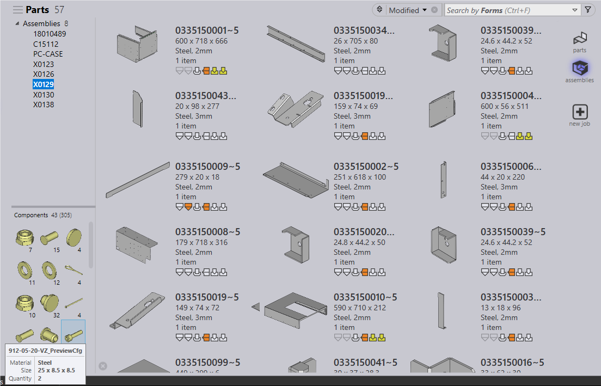

When an assembly part is imported, Praxis :
● Extracts the sheet metal parts and adds them to the Part library.
● Separates the non sheet metal components and adds them to the Component library.
● Adds the assembly to the assemble library.
If the part was imported earlier as a sheet metal part, it removes them from the part library

The imported assembly BOM contains both components and parts. Selecting an assembly from the assembly tree, shows both parts and components contained inside the assembly. Component count (in the second assembly) is displayed below the component image. For instance, in the above image under Components, respective selected assembly component count(43) and total component count(305) is shown.
The component tool – tip displays name, material and size. When the assembly is produced, the components are filtered out from the job.
Along with the binaries, the installer installs sample assemblies with components in C:\ProgramFiles\Metamation\Praxis\Samples\Assys\Components folder. These parts and assemblies can be imported to test the component import feature.